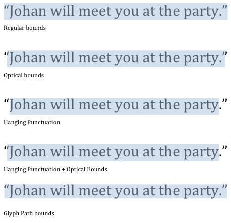

CTLineRef 的函数库及使用
1、 CTLineRef 函数库
CTLineRef 可以看做渲染到屏幕上的一行字形，可以使用它处理 CoreText 的点击事件，还可以进行排版将文字对齐，一行文字显示不完时、截断文字使用省略号替代；当然，也能够获取该行的字形度量：上行高度、下行高度、行间距、行宽等！
typedef const struct CF_BRIDGED_TYPE(id) __CTLine * CTLineRef;

1.1、 CTLineRef 的创建
/** 根据一段富文本创建 CTLineRef 对象
* @discussion 该方法简单地创建一个行，无需通过排版类 CTTypesetterRef；
*/
CTLineRef CTLineCreateWithAttributedString(CFAttributedStringRef attrString);
/// 获取创建 CTLine 的字形的 rang ；失败则返回 empty range
CFRange CTLineGetStringRange(CTLineRef line);
1.2、文字截断
当文字太长、一行明显不能显示完全时，通常使用省略号 ... 将文字截断，只显示一部分：
//文字截断类型
typedef CF_ENUM(uint32_t, CTLineTruncationType) {
kCTLineTruncationStart = 0, // 在开头截断
kCTLineTruncationEnd = 1, // 在结尾截断
kCTLineTruncationMiddle = 2 // 在中间截断
};
/** 将现有 CTLineRef 截断并返回一个新的对象
* @param width 截断宽度：如果行宽大于截断宽度，则该行将被截断
* @param truncationType 截断类型
* @param truncationToken 截断用的填充符号，通常是省略号 ... ，为Null时则只截断，不做填充
* 该填充符号的宽度必须小于截断宽度，否则该函数返回 NULL；
*/
CTLineRef _Nullable CTLineCreateTruncatedLine(CTLineRef line,double width,
CTLineTruncationType truncationType,CTLineRef _Nullable truncationToken);
1.3、多行文字 CTLineRef 的对齐方式
/** 两端对齐：填充空白符，文字之间等间距
* @param line 需要对齐的行
* @param justificationFactor 调整系数，取值范围 [0,1] ； <= 0 时不执行对齐； >=1 时执行完全调整；
* 假如文字长度是100，限定宽度是300，则填充的空白区域为 200*justificationFactor
* @param justificationWidth 目标宽度，如果 line 的宽度超过了 justificationWidth ，那么文本将被压缩
* 或者返回NULL？
*/
CTLineRef _Nullable CTLineCreateJustifiedLine(CTLineRef line,CGFloat justificationFactor,double justificationWidth);
/** 对齐文本：通过偏移对齐
* @param flushFactor (0.0,1.0) 0表示靠左，1表示靠右，0.5表示居中;
* @param flushWidth 对齐的宽度
*/
double CTLineGetPenOffsetForFlush(CTLineRef line,CGFloat flushFactor,double flushWidth);
多行文字的对齐方式，常见有下面三种：

另外一种同样常见的排版方式是两端对齐（JustifiedLine）

1.4、获取 GlyphRuns
处理点击事件时，需要先找到点击的哪一行 CTLineRef，然后使用下述函数找到具体的 CTRunRef！
/// 获取字形数量
CFIndex CTLineGetGlyphCount(CTLineRef line);
/// 获取所有的 glyphRuns
CFArrayRef CTLineGetGlyphRuns(CTLineRef line);
1.5、 获取 CTLineRef的 size、bounds等信息
/** 枚举值 CTLineBoundsOptions ：传递0(没有选项)返回排版边界，包括排版前导和移位
* 允许其成员值按位组合。
*/
typedef CF_OPTIONS(CFOptionFlags, CTLineBoundsOptions) {
kCTLineBoundsExcludeTypographicLeading = 1 << 0, /// 从边界计算（不同文本行的基线之间的间隔）中排除印刷字体的前导
kCTLineBoundsExcludeTypographicShifts = 1 << 1, /// 在计算边界时不考虑字距调整或引导信息
///悬挂标点符号是一种排版标点符号和项目符号点（最常用的是引号和连字符）的方式，这样它们就不会破坏文本主体的“流动”或“破坏”对齐的边缘。之所以这样称呼，是因为标点符号似乎在文本的边缘处“悬挂”，而不是并入文本的块或列中。通常在文本完全合理时使用。
kCTLineBoundsUseHangingPunctuation = 1 << 2,
/// 使用字形的边界，而非默认的排版边界；因为它们没有考虑到排版的详细信息，这将返回所呈现的实际文本的边界框;
kCTLineBoundsUseGlyphPathBounds = 1 << 3,
///使用光学边界：某些字体包含光学感知的信息，并且可能与文本的边界框不完全对齐；此选项将覆盖 PathBounds;
kCTLineBoundsUseOpticalBounds = 1 << 4,
/// 根据各种语言的通用符号序列包括额外的空间，在绘图时使用，以避免可能由排版边界引起的剪切；
/// 当与kCTLineBoundsUseGlyphPathBounds一起使用时，该选项没有任何效果。
kCTLineBoundsIncludeLanguageExtents = 1 << 5,
};
/** 获取一个CTLine的宽、高等字形度量
* @param ascent 上行高度；回调函数，如果不需要，可以将其设置为NULL。
* @param descent 下行高度；基线距字体中最低的字形底部的距离，是一个负值
* @param leading 行距
* @result 行宽；如果行无效，则返回 0
* @discussion 行高 lineHeight = ascent + |descent| + linegap
*/
double CTLineGetTypographicBounds(CTLineRef line,CGFloat * _Nullable ascent,
CGFloat * _Nullable descent,CGFloat * _Nullable leading);
/** 获取一行文本的 bounds，坐标原点与 CTLineRef 原点重合，矩形原点位于左下角
* @param options 一般填 0
* @result 如果行无效，将返回CGRectNull
*/
CGRect CTLineGetBoundsWithOptions(CTLineRef line,CTLineBoundsOptions options);
/// 获取一行未尾字符后空格的像素长度。如 "abc " 后面有两个空格，返回的就是这两个空格占有的像素宽度
double CTLineGetTrailingWhitespaceWidth(CTLineRef line);
/** 计算该行文字绘制成图像所需要的最小 bounds
* @param context 计算图像 bounds 的上下文，可以传 NULL；
* @discussion 计算这行文字绘制成图片所需要的最小 size，没有各种边距，是一种是尽可能小的理想状态的size
* @result 如果行无效，将返回CGRectNull
*/
CGRect CTLineGetImageBounds(CTLineRef line,CGContextRef _Nullable context);
1.6、处理点击事件
行插入符号定位和高亮显示
/** 处理点击事件的字符串索引：传入行信息和位置信息，计算出该位置对应的字符索引
* @param position 点击相对于 line's origin 的位置
* @result 如果失败，返回kCFNotFound
* @discussion 相对于该行的字符串范围，返回值将不小于第一个字符串索引，且不大于最后一个字符串索引 + 1
*/
CFIndex CTLineGetStringIndexForPosition(CTLineRef line,CGPoint position);
/** 计算当前行中，指定索引的字符的相对x坐标
* @param charIndex 待计算字符的字符串索引
* @param secondaryOffset 可以为 NULL，是 charIndex沿着基线的辅助偏移量
*/
CGFloat CTLineGetOffsetForStringIndex(CTLineRef line, CFIndex charIndex,CGFloat * _Nullable secondaryOffset);
/** 遍历一行中字符的脱字符偏移量
* @param block 偏移量 offset 是相对于 CTLineRef 原点；参数 leadingEdge 指的是逻辑顺序
*/
void CTLineEnumerateCaretOffsets(CTLineRef line,
void (^block)(double offset, CFIndex charIndex, bool leadingEdge, bool* stop));
1.7、 绘制 CTLineRef
/** CTLine 可以直接绘制
* @param line 待绘制的行
* @param context 上下文
* @discussion CGContextSetTextPosition() 设置的位置对CTFrameDraw()没有作用，但是和CTLineDraw() 配合使用则效果非常好
*/
void CTLineDraw(CTLineRef line,CGContextRef context);
2、 CTLineRef 的使用
2.1、处理点击事件
当使用 CTFrame 绘制文字时，点击屏幕，需要获取触摸点所在的富文本信息，用于处理点击事件。
2.1.1、触摸行CTLine：
首先，需要计算出触摸了哪一行 CTLine：
CTLineRef getTouchLine(CGPoint point,CTFrameRef frameRef){
CTLineRef line = nil;
if (frameRef == nil) { return line; }
CGPathRef path = CTFrameGetPath(frameRef);
CGRect bounds = CGPathGetBoundingBox(path);/// 页面边界
CGFloat pageWidth = CGRectGetWidth(bounds);/// 页面宽度
CGFloat pageHeight = CGRectGetHeight(bounds);/// 页面高度
CFArrayRef lines = CTFrameGetLines(frameRef);
int lineCount = (int)CFArrayGetCount(lines);
if (lineCount < 1) {
return line;
}
CGPoint origins[lineCount];
for (int i = 0; i < lineCount; i++) {
origins[i] = CGPointZero;
}
CTFrameGetLineOrigins(frameRef, CFRangeMake(0, 0), origins);
for (int i = 0; i < lineCount; i ++) {
CGPoint origin = origins[i];
CTLineRef tempLine = CFArrayGetValueAtIndex(lines, i);
CGFloat lineAscent = 0; //上行高度
CGFloat lineDescent = 0; //下行高度
CGFloat lineLeading = 0; //行距
CTLineGetTypographicBounds(tempLine, &lineAscent, &lineDescent, &lineLeading);/// 获取CTLine的字形度量
CGFloat lineHeight = lineAscent + fabs(lineDescent) + lineLeading;
CGRect lineFrame = CGRectMake(origin.x, pageHeight - (origin.y + lineAscent), pageWidth, lineHeight);
lineFrame = CGRectInset(lineFrame, -5, -5);
if (CGRectContainsPoint(lineFrame, point)) {
line = tempLine;
break;
}
}
return line;
}
2.1.2、触摸字形 CTRunRef：
计算出 CTLine，然后在该行计算出触摸点的文本属性：
/** 获取触摸点的 CTRunRef
* @param point 触摸点
*/
CTRunRef getTouchRun(CGPoint point,CTFrameRef frameRef){
CTRunRef getRun = NULL;
CTLineRef lineRef = getTouchLine(point, frameRef);
CFArrayRef glyphRuns = CTLineGetGlyphRuns(lineRef);
int runCount = (int)CFArrayGetCount(glyphRuns);
CGFloat startPoint = 0;
for (int j = 0; j < runCount ; j ++) {
CTRunRef run = CFArrayGetValueAtIndex(glyphRuns, j);
CGFloat width = CTRunGetTypographicBounds(run, CFRangeMake(0, 0), NULL, NULL, NULL);//获取 CTRun 的宽度
if (point.x > startPoint && point.x < (startPoint + width)) {
getRun = run;
break;
}
startPoint += width;
}
return getRun;
}
获取 CTRunRef ，可以查看它的所有属性，是否可点击：
/** 获取触摸点的 YLAttachment
* @param point 触摸点
* @return 若没有，则返回 nil
*/
YLAttachment *getTouchAttachment(CGPoint point,CTFrameRef frameRef){
YLAttachment *getAttachment = nil;
CTRunRef run = getTouchRun(point, frameRef);
if (run) {
CFDictionaryRef attributes = CTRunGetAttributes(run);
if (attributes) {
if (CFDictionaryContainsKey(attributes, kYLAttachmentAttributeName)) {
YLAttachment *attachment = CFDictionaryGetValue(attributes, kYLAttachmentAttributeName);;//获取属性
if (attachment) {
getAttachment = attachment;
NSLog(@"%@", attachment);
}
}
}
}
return getAttachment;
}
2.1.3、其它点击信息
还可以根据触摸的所在行 CTLine，计算出触摸的字符串范围、字符串索引：
/** 获得触摸位置那一行文字范围 Range
* @param point 触摸点
*/
NSRange getTouchLineRange(CGPoint point,CTFrameRef frameRef){
NSRange range = NSMakeRange(NSNotFound, 0);
CTLineRef line = getTouchLine(point, frameRef);
if (line) {
CFRange lineRange = CTLineGetStringRange(line);
range = NSMakeRange(lineRange.location == kCFNotFound ? NSNotFound : lineRange.location, lineRange.length);
}
return range;
}
/** 获得触摸位置文字的Location
* @param point 触摸点
*/
signed long getTouchLocation(CGPoint point,CTFrameRef frameRef){
signed long location = -1;
CTLineRef line = getTouchLine(point,frameRef);
if (line != nil) {
location = CTLineGetStringIndexForPosition(line, point);
}
return location;
}
2.2、 获取一行文本的 Size

/** 获取指定 CTLine 高度与宽度
*/
CGSize getSizeWithCTLine(CTLineRef lineRef){
if (lineRef == nil) {
return CGSizeZero;
}
CGRect bounds = CTLineGetBoundsWithOptions(lineRef, kCTLineBoundsExcludeTypographicLeading);
return bounds.size;
}
还可以通过字形度量，计算出 Size ：
CGSize getSizeWithCTLine(CTLineRef lineRef){
if (lineRef == nil) {
return CGSizeZero;
}
CGFloat lineAscent = 0; //上行高度
CGFloat lineDescent = 0; //下行高度
CGFloat lineLeading = 0; //行距
CGFloat width = CTLineGetTypographicBounds(lineRef, &lineAscent, &lineDescent, &lineLeading);/// 获取CTLine的字形度量
CGFloat height = lineAscent + fabs(lineDescent) + lineLeading;
return CGSizeMake(width,height);
}
2.3、 获取一行文本的Rect
/** 获取一行文本的Rect
* @param line 所在行
* @param point 所在行的原点
* @note CTLineRef 没有函数可以直接获取该行的原点
* CTLineRef 的原点坐标是相对于整个 CTFrame 而言的，只有在 CTFrame 中，CTLine 才有原点坐标
* 因此 需要使用 CTFrame 函数求取 CTLineRef 的原点
*/
+ (CGRect)getLineBounds:(CTLineRef)line point:(CGPoint)point {
CGFloat ascent = 0.0f;
CGFloat descent = 0.0f;
CGFloat leading = 0.0f;
CGFloat width = (CGFloat)CTLineGetTypographicBounds(line, &ascent, &descent, &leading);
CGFloat height = ascent + fabs(descent) + leading;
return CGRectMake(point.x, point.y - descent, width, height);
}